Visual Studio Code 中的 Django 教程
Django 是一个高级 Python 框架，旨在实现快速、安全且可扩展的 Web 开发。Django 提供了丰富的支持，包括 URL 路由、页面模板以及数据处理。
在本 Django 教程中，您将创建一个简单的 Django 应用，其中包含三个使用公共基础模板的页面。您将在 Visual Studio Code 环境中创建此应用，以便了解如何在 VS Code 终端、编辑器和调试器中与 Django 配合使用。本教程不会深入探讨 Django 本身的各种细节，例如使用数据模型和创建管理界面。关于这些方面的指导，请参阅本教程末尾的 Django 文档链接。
本 Django 教程的完整代码项目可在 GitHub 上找到：python-sample-vscode-django-tutorial。
如果您遇到任何问题，可以在 Python 扩展讨论问答上搜索答案或提问。
先决条件
要成功完成本 Django 教程，您必须完成以下操作（与通用 Python 教程中的步骤相同）：
- 安装 Python 扩展。
- 安装一个 Python 3 版本（本教程基于此版本编写）。可选方案包括：
- （所有操作系统）从 python.org 下载；通常使用页面上最先出现的 Download Python 3.9.1 按钮（或最新版本）。
- （Linux）内置的 Python 3 安装可以正常使用，但要安装其他 Python 包，您必须在终端中运行
sudo apt install python3-pip。 - （macOS）在 macOS 上通过 Homebrew 安装，使用
brew install python3（不支持 macOS 上的系统 Python 安装）。 - （所有操作系统）从 Anaconda 下载（用于数据科学目的）。
path 来检查该位置。如果 Python 解释器的文件夹未被包含，请打开 Windows 设置，搜索"环境"，选择 编辑账户的环境变量，然后编辑 Path 变量以包含该文件夹。
为 Django 教程创建项目环境
在本节中，您将创建一个虚拟环境，并在其中安装 Django。使用虚拟环境可以避免将 Django 安装到全局 Python 环境中，并让您能够精确控制应用程序中使用的库。虚拟环境还便于为环境创建 requirements.txt 文件。
Python Environments 扩展支持多种环境类型，包括 venv、conda、poetry 等。本教程使用 venv，因为它内置于 Python 中，无需额外的工具。其他环境类型的步骤类似——详见创建环境。
- 在您的文件系统中，为本教程创建一个项目文件夹，例如
hello_django。 - 通过运行
code .，或运行 VS Code 并使用 文件 > 打开文件夹 命令，在 VS Code 中打开项目文件夹。 - 使用 Python: Create Environment 命令创建虚拟环境：
- 打开命令面板（
kb(workbench.action.showCommands)）- 搜索并选择 Python: Create Environment
- 选择 Venv 来创建 venv 环境
- 选择要用于该环境的 Python 解释器
- 打开命令面板（
VS Code 会在您的工作区中创建一个 .venv 文件夹，并自动选择新环境。
[!TIP]
您也可以使用 Python 侧边栏来创建环境。展开 Environment Managers 并选择 + 按钮进行快速创建，该方式使用合理的默认设置。
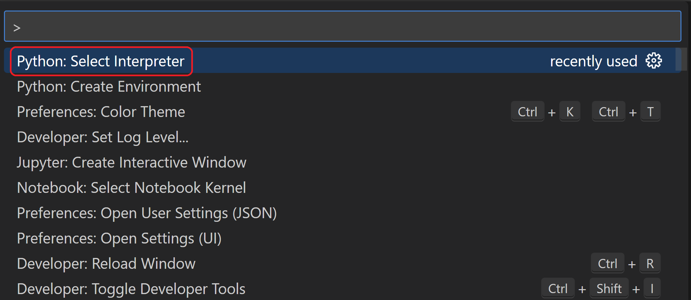
- 所选的环境会显示在 VS Code 状态栏的右侧，('.venv': venv) 指示器表明您正在使用虚拟环境：

- 使用以下方法之一在虚拟环境中安装 Django：
使用包管理 UI：
- 在 Python 侧边栏中，展开 Environment Managers
- 右键单击您的
.venv环境，然后选择 Manage Packages- 搜索
django并选择 Install
- 搜索
- 右键单击您的
使用终端：
从命令面板中运行 Terminal: Create New Terminal（kb(workbench.action.terminal.new)），这将创建一个终端并自动激活虚拟环境。然后运行：
python -m pip install django现在，您已拥有一个自包含的环境，可用于编写 Django 代码。当您打开新终端时，VS Code 会自动激活该环境。如果您在 VS Code 外部打开单独的命令提示符或终端，请运行 source .venv/bin/activate（Linux/macOS）或 .venv\Scripts\Activate.ps1（Windows）来激活环境。当命令提示符开头显示 (.venv) 时，即表示环境已激活。
创建并运行一个最小的 Django 应用
在 Django 术语中，一个"Django 项目"由多个站点级配置文件以及一个或多个"应用"组成，您将这些应用部署到 Web 主机上以创建一个完整的 Web 应用程序。一个 Django 项目可以包含多个应用，每个应用通常在项目中具有独立的功能，而同一个应用可以出现在多个 Django 项目中。而一个应用本身只是一个遵循 Django 所期望的某些约定的 Python 包。
要创建一个最小的 Django 应用，首先需要创建 Django 项目作为应用的容器，然后再创建应用本身。这两种操作都使用 Django 管理工具 django-admin，该工具在您安装 Django 包时便已安装。
创建 Django 项目
- 在已激活虚拟环境的 VS Code 终端中，运行以下命令：
django-admin startproject web_project .
此 startproject 命令（通过末尾的 .）假定当前文件夹是您的项目文件夹，并在其中创建以下内容：
manage.py：项目的 Django 命令行管理工具。您可以使用python manage.py <命令> [选项]来运行项目的管理命令。- 一个名为
web_project的子文件夹，其中包含以下文件：__init__.py：一个空文件，用于告诉 Python 此文件夹是一个 Python 包。asgi.py：供兼容 ASGI 的 Web 服务器为您的项目提供服务的入口点。您通常保持此文件不变，因为它为生产 Web 服务器提供了钩子。settings.py：包含 Django 项目的设置，您在开发 Web 应用的过程中会对其进行修改。urls.py：包含 Django 项目的内容目录，您同样会在开发过程中对其进行修改。wsgi.py：供兼容 WSGI 的 Web 服务器为您的项目提供服务的入口点。您通常保持此文件不变，因为它为生产 Web 服务器提供了钩子。
- 一个名为
- 通过运行以下命令创建一个空的开发数据库：
python manage.py migrate
当您第一次运行服务器时，它会在文件 db.sqlite3 中创建一个默认的 SQLite 数据库，该数据库适用于开发目的，但也可用于低流量的生产环境 Web 应用。有关数据库的更多信息，请参阅数据库类型部分。
- 要验证 Django 项目，请确保您的虚拟环境已激活，然后使用命令
python manage.py runserver启动 Django 的开发服务器。服务器在默认端口 8000 上运行，您将在终端窗口中看到类似以下的输出：Watching for file changes with StatReloader Performing system checks... System check identified no issues (0 silenced). June 13, 2023 - 18:38:07 Django version 4.2.2, using settings 'web_project.settings' Starting development server at http://127.0.0.1:8000/ Quit the server with CTRL-BREAK.
Django 的内置 Web 服务器仅用于本地开发目的。然而，当您部署到 Web 主机时，Django 会使用主机的 Web 服务器。Django 项目中的 wsgi.py 和 asgi.py 模块负责与生产服务器进行挂接。
如果您想使用不同于默认 8000 的端口，可以在命令行中指定端口号，例如 python manage.py runserver 5000。
kbstyle(Ctrl+单击)终端输出窗口中的http://127.0.0.1:8000/URL，以在默认浏览器中打开该地址。如果 Django 安装正确且项目有效，您将看到如下所示的默认页面。VS Code 终端输出窗口也会显示服务器日志。
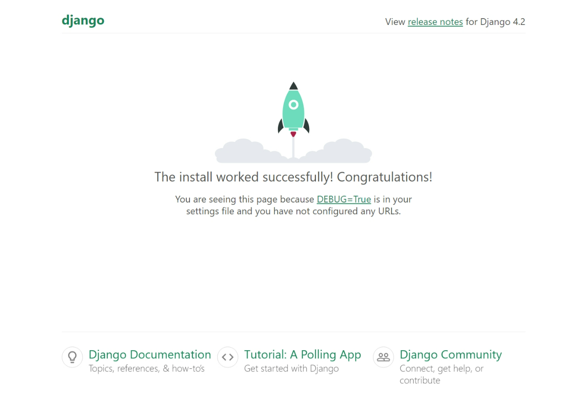
- 完成后，关闭浏览器窗口，并在 VS Code 中使用
kbstyle(Ctrl+C)停止服务器，如终端输出窗口中所示。创建 Django 应用
- 在已激活虚拟环境的 VS Code 终端中，在项目文件夹（即
manage.py所在的位置）中运行管理工具的startapp命令：python manage.py startapp hello
该命令会创建一个名为 hello 的文件夹，其中包含多个代码文件和一个子文件夹。在这些文件中，您经常会用到 views.py（包含定义 Web 应用中页面的函数）和 models.py（包含定义数据对象的类）。migrations 文件夹由 Django 的管理工具用于管理数据库版本，本教程后续会对此进行讨论。此外还有 apps.py（应用配置）、admin.py（用于创建管理界面）和 tests.py（用于创建测试），这些文件不在本教程的讨论范围内。
- 修改
hello/views.py以匹配以下代码，这将为应用的首页创建一个视图：from django.http import HttpResponse def home(request): return HttpResponse("Hello, Django!") - 创建一个文件
hello/urls.py，内容如下。urls.py文件是您指定模式以将不同的 URL 路由到相应视图的地方。以下代码包含一个路由，用于将应用的根 URL（""）映射到您刚刚添加到hello/views.py中的views.home函数：from django.urls import path from hello import views urlpatterns = [ path("", views.home, name="home"), ] web_project文件夹也包含一个urls.py文件，这是实际处理 URL 路由的地方。打开web_project/urls.py并修改它以匹配以下代码（您可以保留那些说明性注释）。此代码使用django.urls.include引入应用的hello/urls.py，从而将应用的路由保持在应用内部。当项目包含多个应用时，这种分离非常有用。from django.contrib import admin from django.urls import include, path urlpatterns = [ path("", include("hello.urls")), path('admin/', admin.site.urls) ]- 保存所有修改过的文件。
- 在 VS Code 终端中，再次在虚拟环境已激活的情况下，使用
python manage.py runserver运行开发服务器，并在浏览器中打开http://127.0.0.1:8000/，即可看到一个显示"Hello, Django"的页面。
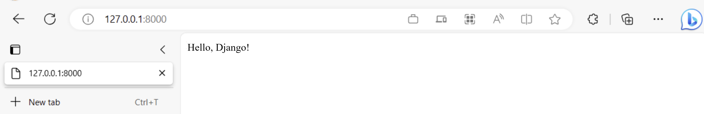
创建调试器启动配置
您可能已经在想，有没有一种更简单的方法来运行服务器并测试应用，而不必每次都输入 python manage.py runserver。幸运的是，确实有！您可以在 VS Code 中创建一个自定义的启动配置，它也将用于不可避免的调试练习。
- 切换到 VS Code 中的 运行 视图（使用左侧活动栏或
kb(workbench.action.debug.start)）。您可能会看到消息"要自定义运行和调试，请创建 launch.json 文件"。这意味着您还没有包含调试配置的launch.json文件。如果您点击 创建 launch.json 文件 链接，VS Code 可以为您创建：
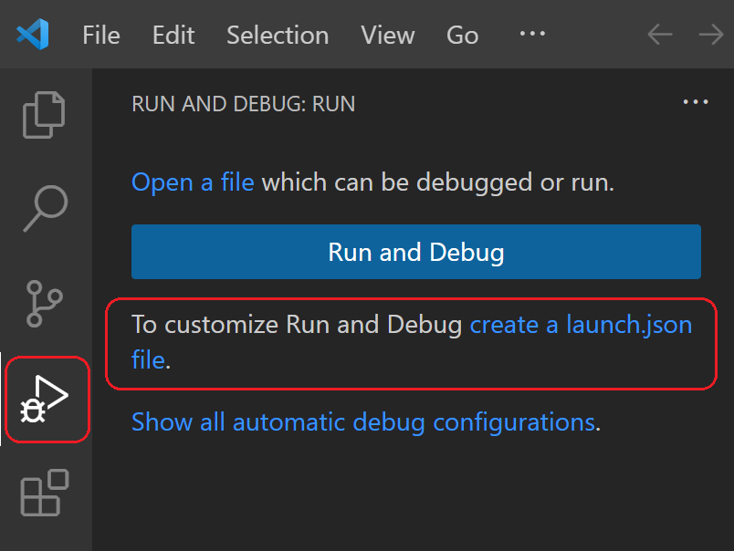
- 选择该链接，VS Code 将提示您选择调试配置。从下拉列表中选择 Django，VS Code 将使用 Django 运行配置填充一个新的
launch.json文件。launch.json文件包含多个调试配置，每个配置都是configuration数组中的一个单独的 JSON 对象。 - 向下滚动并查看名为 "Python: Django" 的配置：
{ // Use IntelliSense to learn about possible attributes. // Hover to view descriptions of existing attributes. // For more information, visit: https://go.microsoft.com/fwlink/?linkid=830387 "version": "0.2.0", "configurations": [ { "name": "Python Debugger: Django", "type": "debugpy", "request": "launch", "program": "${workspaceFolder}\\manage.py", "args": [ "runserver" ], "django": true, "justMyCode": true } ] }
此配置告诉 VS Code 使用选定的 Python 解释器和 args 列表中的参数来运行 "${workspaceFolder}/manage.py"。因此，使用此配置启动 VS Code 调试器，等同于在已激活虚拟环境的 VS Code 终端中运行 python manage.py runserver。（如果需要，您可以在 args 中添加端口号，如 "5000"。）"django": true 条目还告诉 VS Code 启用 Django 页面模板的调试，您将在本教程后面看到。
- 通过选择 运行 > 开始调试 菜单命令，或选择列表旁边的绿色 开始调试 箭头（
kb(workbench.action.debug.continue)）来测试配置：
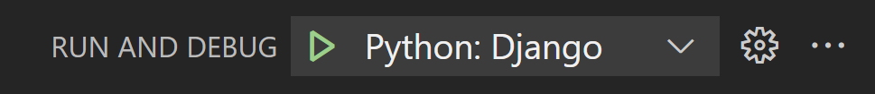
kbstyle(Ctrl+单击)终端输出窗口中的http://127.0.0.1:8000/URL，以打开浏览器并查看应用是否正常运行。- 完成后，关闭浏览器并停止调试器。要停止调试器，请使用停止工具栏按钮（红色方块）或 运行 > 停止调试 命令（
kb(workbench.action.debug.stop)）。 - 现在，您可以随时使用 运行 > 开始调试 来测试应用，这还有一个好处，就是会自动保存所有修改过的文件。
探索调试器
调试让您有机会在特定的代码行上暂停正在运行的程序。当程序暂停时，您可以检查变量、在调试控制台面板中运行代码，以及利用调试中描述的其他功能。运行调试器还会在调试会话开始前自动保存所有修改过的文件。
开始之前：确保您已通过终端中的 kbstyle(Ctrl+C) 停止了上一节末尾正在运行的应用。如果您让应用在一个终端中继续运行，它会持续占用端口。因此，当您使用相同端口在调试器中运行应用时，原先运行的应用会处理所有请求，您将不会在被调试的应用中看到任何活动，程序也不会在断点处停止。换句话说，如果调试器似乎不工作，请确保没有其他应用实例仍在运行。
- 在
hello/urls.py中，向urlpatterns列表添加一个路由：path("hello/<name>", views.hello_there, name="hello_there"),
path 的第一个参数定义了一个路由 "hello/"，该路由接受一个名为 name 的变量字符串。该字符串会传递给 path 的第二个参数中指定的 views.hello_there 函数。
URL 路由区分大小写。例如，路由 /hello/ 与 /Hello/ 是不同的。如果您希望同一个视图函数处理这两者，请为每个变体定义路径。
- 将
views.py的内容替换为以下代码，以定义hello_there函数，您可以在调试器中逐步执行该函数：import re from django.utils.timezone import datetime from django.http import HttpResponse def home(request): return HttpResponse("Hello, Django!") def hello_there(request, name): now = datetime.now() formatted_now = now.strftime("%A, %d %B, %Y at %X") # Filter the name argument to letters only using regular expressions. URL arguments # can contain arbitrary text, so we restrict to safe characters only. match_object = re.match("[a-zA-Z]+", name) if match_object: clean_name = match_object.group(0) else: clean_name = "Friend" content = "Hello there, " + clean_name + "! It's " + formatted_now return HttpResponse(content)
URL 路由中定义的 name 变量会作为参数传递给 hello_there 函数。如代码注释中所述，应始终过滤用户提供的任意信息，以避免对应用的各种攻击。在此例中，代码将 name 参数过滤为仅包含字母，从而避免了控制字符、HTML 等的注入。（当您在下一节中使用模板时，Django 会进行自动过滤，您就不需要这段代码了。）
- 通过以下任一方式在
hello_there函数的第一行代码（now = datetime.now()）上设置断点：- 将光标放在该行上，按
kb(editor.debug.action.toggleBreakpoint)，或- 将光标放在该行上，选择 运行 > 切换断点 菜单命令，或
- 直接点击行号左侧的边距（悬停时会显示一个淡红色圆点）。
- 将光标放在该行上，按
断点会在左侧边距中以红色圆点的形式出现：
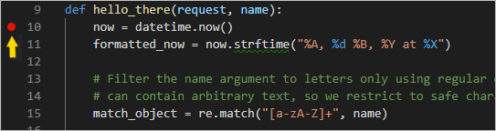
- 通过选择 运行 > 开始调试 菜单命令，或选择列表旁边的绿色 开始调试 箭头（
kb(workbench.action.debug.continue)）来启动调试器：
观察状态栏颜色变化，表示正在调试：
VS Code 中还会出现一个调试工具栏（如下所示），其中包含以下命令：暂停（或继续，kb(workbench.action.debug.continue)）、单步跳过（kb(workbench.action.debug.stepOver)）、单步进入（kb(workbench.action.debug.stepInto)）、单步跳出（kb(workbench.action.debug.stepOut)）、重新启动（kb(workbench.action.debug.restart)）和停止（kb(workbench.action.debug.stop)）。有关每个命令的描述，请参阅 VS Code 调试。
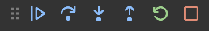
- 输出出现在"Python 调试控制台"终端中。打开浏览器并导航到
http://127.0.0.1:8000/hello/VSCode。在页面渲染之前，VS Code 会在您设置的断点处暂停程序。断点上的小黄色箭头表示这是要执行的下一行代码。
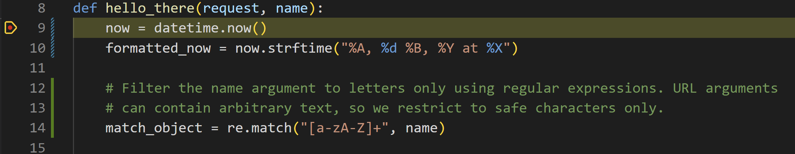
- 使用"单步跳过"来运行
now = datetime.now()语句。 - 在 VS Code 窗口的左侧，您会看到一个 变量 窗格，其中显示局部变量（如
now）以及参数（如name）。在其下方是 监视、调用堆栈 和 断点 窗格（详情请参阅 VS Code 调试）。在 局部变量 区域，尝试展开不同的值。您也可以双击值（或使用kb(debug.setVariable)）来修改它们。然而，更改像now这样的变量可能会破坏程序。开发人员通常只在代码没有产生正确值时才进行更正。
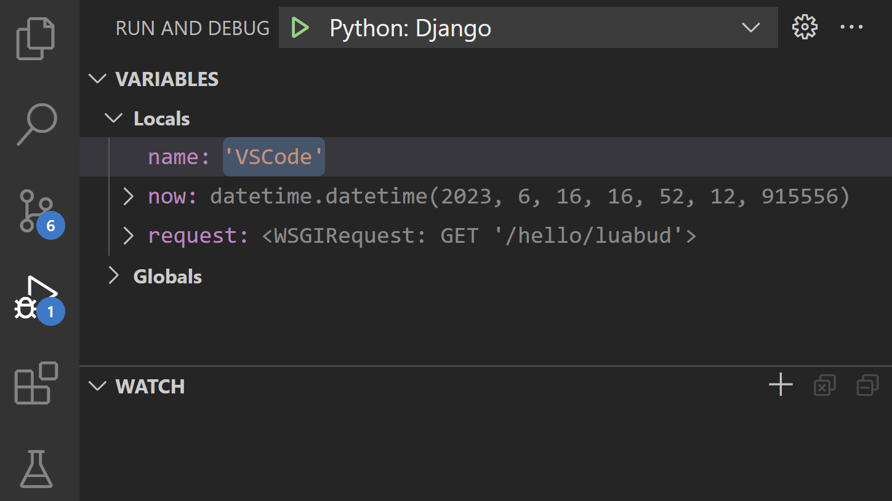
- 当程序暂停时，调试控制台 面板（与终端面板中的"Python 调试控制台"不同）允许您使用程序的当前状态来试验表达式和尝试代码片段。例如，在您跳过
now = datetime.now()这一行之后，您可以尝试不同的日期/时间格式。在编辑器中，选中now.strftime("%A, %d %B, %Y at %X")这段代码，然后右键单击并选择 Debug: Evaluate 将该代码发送到调试控制台，它会运行：now.strftime("%A, %d %B, %Y at %X") 'Friday, 07 September, 2018 at 07:46:32'提示：调试控制台 还会显示应用中可能不会出现在终端里的异常。例如，如果您在 运行和调试 视图的 调用堆栈 区域看到"Paused on exception"消息，请切换到 调试控制台 以查看异常消息。
- 将该行复制到调试控制台底部的 > 提示符处，并尝试更改格式：
now.strftime("%A, %d %B, %Y at %X") 'Tuesday, 13 June, 2023 at 18:03:19' now.strftime("%a, %d %b, %Y at %X") 'Tue, 13 Jun, 2023 at 18:03:19' now.strftime("%a, %d %b, %y at %X") 'Tue, 13 Jun, 23 at 18:03:19' - 如果您愿意，可以再逐步执行几行代码，然后选择"继续"（
kb(workbench.action.debug.continue)）让程序运行。浏览器窗口会显示结果：
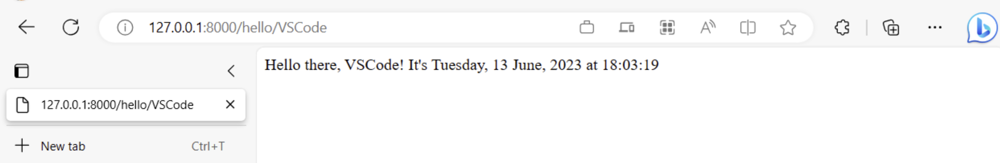
- 更改代码中的行以使用不同的日期时间格式，例如
now.strftime("%a, %d %b, %y at %X")，然后保存文件。Django 服务器将自动重新加载，这意味着更改将应用而无需重新启动调试器。刷新浏览器页面以查看更新。 - 完成后，关闭浏览器并停止调试器。要停止调试器，请使用停止工具栏按钮（红色方块）或 运行 > 停止调试 命令（
kb(workbench.action.debug.stop)）。提示：为了更方便地重复导航到特定 URL（如
http://127.0.0.1:8000/hello/VSCode），可以在某个文件（如views.py）中使用print语句输出该 URL。该 URL 会出现在 VS Code 终端中，您可以使用kbstyle(Ctrl+单击)在浏览器中打开它。转到定义和速览定义命令
在使用 Django 或任何其他库时，您可能想要查看这些库本身的代码。VS Code 提供了两个方便的命令，可以直接导航到任何代码中类和其他对象的定义：
- 转到定义，从您的代码跳转到定义对象的代码中。例如，在
views.py中，右键单击home函数中的HttpResponse并选择 转到定义（或使用kb(editor.action.revealDefinition)），即可导航到 Django 库中的类定义。 - 速览定义（
kb(editor.action.peekDefinition)，也位于右键上下文菜单中），功能类似，但直接在编辑器中显示类定义（在编辑器窗口中腾出空间以避免遮挡任何代码）。按kbstyle(Escape)关闭速览窗口，或使用右上角的 x。
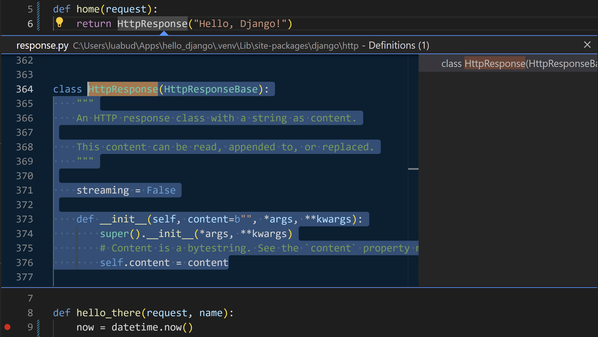
使用模板渲染页面
到目前为止，您在本教程中创建的应用仅从 Python 代码生成纯文本网页。虽然可以在代码中直接生成 HTML，但开发人员避免这种做法，因为它会使应用面临跨站脚本（XSS）攻击。例如，在本教程的 hello_there 函数中，人们可能会想在代码中格式化输出，类似于 content = "，其中 Hello there, " + clean_name + "!
"content 的结果直接提供给浏览器。这种做法允许攻击者在 URL 中放置恶意 HTML（包括 JavaScript 代码），这些代码最终会出现在 clean_name 中，从而在浏览器中运行。
一个更好的做法是使用模板将 HTML 完全排除在代码之外，这样您的代码只关注数据值，而不关注渲染。
在 Django 中，模板是一个 HTML 文件，其中包含代码在运行时提供的值的占位符。然后，Django 模板引擎负责在渲染页面时进行替换，并提供自动转义以防止 XSS 攻击（也就是说，如果您尝试在数据值中使用 HTML，您将看到 HTML 仅渲染为纯文本）。因此，代码只关注数据值，而模板只关注标记。Django 模板提供了灵活的选项，例如模板继承，它允许您定义一个包含公共标记的基础页面，然后在此基础上添加特定于页面的内容。
在本节中，您首先创建一个使用模板的单个页面。在后续章节中，您将配置应用以提供静态文件，然后为应用创建多个页面，每个页面都包含一个来自基础模板的导航栏。Django 模板还支持控制流和迭代，您将在本教程后面关于模板调试的内容中看到。
- 在
web_project/settings.py文件中，找到INSTALLED_APPS列表并添加以下条目，以确保项目知道该应用，从而能够处理模板：'hello', - 在
hello文件夹中，创建一个名为templates的文件夹，然后再创建一个名为hello的子文件夹以匹配应用名称（这种双层文件夹结构是典型的 Django 约定）。 - 在
templates/hello文件夹中，创建一个名为hello_there.html的文件，内容如下。此模板包含两个用于数据值的占位符，分别名为 "name" 和 "date"，它们由成对的花括号\{{和}}界定。所有其他不变的文本都是模板的一部分，连同格式化标记（如）。如您所见，模板占位符也可以包含格式化，即管道|符号之后的表达式，在此例中使用了 Django 内置的 date 过滤器和 time 过滤器。因此，代码只需要传递日期时间值，而不是预格式化的字符串：<!DOCTYPE html> <html> <head> <meta charset="utf-8" /> <title>Hello, Django</title> </head> <body> <strong>Hello there, \{{ name }}!</strong> It's \{{ date | date:"l, d F, Y" }} at \{{ date | time:"H:i:s" }} </body> </html> - 在
views.py的顶部，添加以下导入语句：from django.shortcuts import render - 同样在
views.py中，修改hello_there函数以使用django.shortcuts.render方法来加载模板并提供模板上下文。上下文是供模板内使用的一组变量。render函数接受请求对象，然后是相对于templates文件夹的模板路径，最后是上下文对象。（开发人员通常将模板命名为与使用它们的函数相同的名称，但匹配名称不是必需的，因为您始终在代码中引用确切的文件名。）def hello_there(request, name): print(request.build_absolute_uri()) #optional return render( request, 'hello/hello_there.html', { 'name': name, 'date': datetime.now() } )
您可以看到，代码现在更简洁了，只关注数据值，因为标记和格式化都包含在模板中。
- 启动程序（在调试器内部或外部均可，使用
kb(workbench.action.debug.run)），导航到 /hello/name URL，并观察结果。 - 同时尝试使用像
提供静态文件
静态文件是您的 Web 应用为某些请求原样返回的内容片段，例如 CSS 文件。提供静态文件需要 settings.py 中的 INSTALLED_APPS 列表包含 django.contrib.staticfiles，这是默认包含的。
在 Django 中提供静态文件是一门艺术，尤其是在部署到生产环境时。这里展示的是一种简单的方法，适用于 Django 开发服务器以及像 Gunicorn 这样的生产服务器。然而，对静态文件的全面处理超出了本教程的范围，因此有关更多信息，请参阅 Django 文档中的管理静态文件。
在切换到生产环境时，导航到 settings.py，设置 DEBUG=False，并更改 ALLOWED_HOSTS = ['*'] 以允许特定主机。这在使用容器时可能会导致额外的工作。详情请参阅 Issue 13。
为静态文件准备应用
- 在项目的
web_project/urls.py中，添加以下import语句：from django.contrib.staticfiles.urls import staticfiles_urlpatterns - 在同一文件中，在末尾添加以下行，将标准静态文件 URL 包含到项目可以识别的列表中：
urlpatterns += staticfiles_urlpatterns()在模板中引用静态文件
- 在
hello文件夹中，创建一个名为static的文件夹。 - 在
static文件夹中，创建一个名为hello的子文件夹，与应用名称匹配。
之所以需要这个额外的子文件夹，是因为当您将 Django 项目部署到生产服务器时，您会将所有静态文件收集到一个单独的文件夹中，然后由专用的静态文件服务器提供服务。static/hello 子文件夹确保在收集应用的静态文件时，它们位于应用特定的子文件夹中，不会与同一项目中其他应用的文件发生冲突。
- 在
static/hello文件夹中，创建一个名为site.css的文件，内容如下。输入此代码后，还可以观察 VS Code 为 CSS 文件提供的语法高亮，包括颜色预览。.message { font-weight: 600; color: blue; } - 在
templates/hello/hello_there.html中，在</code> 元素之后添加以下行。<code>{% load static %}</code> 标签是一个自定义的 Django 模板标签集，它允许您使用 <code>{% static %}</code> 来引用像样式表这样的文件。 <pre><code class="language-html"> {% load static %} <link rel="stylesheet" type="text/css" href="{% static 'hello/site.css' %}" /></code></pre> </li> <li>同样在 <code>templates/hello/hello_there.html</code> 中，将 <code><body></code> 元素的内容替换为以下使用 <code>message</code> 样式而不是 <code><strong></code> 标签的标记： <pre><code class="language-html"> <span class="message">Hello, there \{{ name }}!</span> It's \{{ date | date:'l, d F, Y' }} at \{{ date | time:'H:i:s' }}.</code></pre> </li> <li>运行应用，导航到 /hello/name URL，观察消息以蓝色渲染。完成后停止应用。 <h3>使用 collectstatic 命令</h3> </li> </ol> <p>对于生产部署，您通常使用 <code>python manage.py collectstatic</code> 命令将应用中的所有静态文件收集到一个单独的文件夹中。然后您可以使用专用的静态文件服务器来提供这些文件，这通常能带来更好的整体性能。以下步骤展示了如何进行这种收集，尽管在使用 Django 开发服务器运行时您不会使用收集到的文件。</p> <ol> <li>在 <code>web_project/settings.py</code> 中，添加以下行，该行定义了在使用 <code>collectstatic</code> 命令时收集静态文件的位置： <pre><code class="language-python"> STATIC_ROOT = BASE_DIR / 'static_collected'</code></pre> </li> <li>在终端中，运行命令 <code>python manage.py collectstatic</code>，并观察 <code>hello/site.css</code> 被复制到与 <code>manage.py</code> 并列的顶层 <code>static_collected</code> 文件夹中。 </li> <li>在实践中，每当您更改静态文件时以及部署到生产环境之前，都要运行 <code>collectstatic</code>。 <h2>创建扩展基础模板的多个模板</h2> </li> </ol> <p>由于大多数 Web 应用有多个页面，而且这些页面通常共享许多公共元素，开发人员将这些公共元素分离到一个基础页面模板中，其他页面模板再对其进行扩展。（这也称为模板继承，意味着扩展的页面会从基础页面继承元素。）</p> <p>此外，由于您可能会创建许多扩展同一模板的页面，因此在 VS Code 中创建一个代码片段会很有帮助，您可以用它快速初始化新的页面模板。代码片段可以帮助您避免繁琐且容易出错的复制粘贴操作。</p> <p>以下各节将介绍此过程的不同部分。</p> <h3>创建基础页面模板和样式</h3> <p>Django 中的基础页面模板包含一组页面的所有共享部分，包括对 CSS 文件、脚本文件等的引用。基础模板还定义一个或多个 <strong>block</strong> 标签，其中包含扩展模板预期要覆盖的内容。block 标签在基础模板和扩展模板中均由 <code>{% block <名称> %}</code> 和 <code>{% endblock %}</code> 界定。</p> <p>以下步骤演示了如何创建基础模板。</p> <ol> <li>在 <code>templates/hello</code> 文件夹中，创建一个名为 <code>layout.html</code> 的文件，内容如下，其中包含名为 "title" 和 "content" 的块。如您所见，该标记定义了一个简单的导航栏结构，包含指向首页、关于和联系页面的链接，您将在后面的章节中创建这些页面。注意使用 Django 的 <code>{% url %}</code> 标签通过相应 URL 模式的名称而不是相对路径来引用其他页面。 <pre><code class="language-html"> <!DOCTYPE html> <html> <head> <meta charset="utf-8"/> <title>{% block title %}{% endblock %}</title> {% load static %} <link rel="stylesheet" type="text/css" href="{% static 'hello/site.css' %}"/> </head> <body> <div class="navbar"> <a href="{% url 'home' %}" class="navbar-brand">Home</a> <a href="{% url 'about' %}" class="navbar-item">About</a> <a href="{% url 'contact' %}" class="navbar-item">Contact</a> </div> <div class="body-content"> {% block content %} {% endblock %} <hr/> <footer> <p>© 2018</p> </footer> </div> </body> </html></code></pre> </li> <li>将以下样式添加到 <code>static/hello/site.css</code> 中现有 "message" 样式的下方，然后保存文件。（本演练不试图演示响应式设计；这些样式只是生成一个还算有趣的结果。） <pre><code class="language-css"> .navbar { background-color: lightslategray; font-size: 1em; font-family: 'Trebuchet MS', 'Lucida Sans Unicode', 'Lucida Grande', 'Lucida Sans', Arial, sans-serif; color: white; padding: 8px 5px 8px 5px; } .navbar a { text-decoration: none; color: inherit; } .navbar-brand { font-size: 1.2em; font-weight: 600; } .navbar-item { font-variant: small-caps; margin-left: 30px; } .body-content { padding: 5px; font-family:'Segoe UI', Tahoma, Geneva, Verdana, sans-serif; }</code></pre> </li> </ol> <p>此时您可以运行应用，但由于您还没有在任何地方使用基础模板，也没有更改任何代码文件，结果与上一步相同。完成其余章节以查看最终效果。</p> <h3>创建代码片段</h3> <p>由于您在下一节中创建的三个页面都扩展了 <code>layout.html</code>，创建一个<strong>代码片段</strong>来初始化带有对基础模板的适当引用的新模板文件可以节省时间。代码片段从单一来源提供一致的代码片段，避免了从现有代码复制粘贴时可能引入的错误。</p> <ol> <li>在 VS Code 中，选择 <strong>文件</strong>（Windows/Linux）或 <strong>Code</strong>（macOS）菜单，然后选择 <strong>首选项</strong> > <strong>用户代码片段</strong>。 </li> <li>在出现的列表中，选择 <strong>html</strong>。（如果您之前创建过代码片段，该选项可能在列表的 <strong>现有代码片段</strong> 部分中显示为 "html.json"。） </li> <li>VS Code 打开 <code>html.json</code> 后，在现有花括号内添加以下代码。（此处未显示的说明性注释描述了详细信息，例如 <code>$0</code> 行如何指示 VS Code 在插入代码片段后光标放置的位置）： <pre><code class="language-json"> "Django Tutorial: template extending layout.html": { "prefix": "djextlayout", "body": [ "{% extends \"hello/layout.html\" %}", "{% block title %}", "$0", "{% endblock %}", "{% block content %}", "{% endblock %}" ], "description": "Boilerplate template that extends layout.html" },</code></pre> </li> <li>保存 <code>html.json</code> 文件（<code>kb(workbench.action.files.save)</code>）。 </li> <li>现在，每当您开始输入代码片段的前缀（如 <code>djext</code>）时，VS Code 都会将该代码片段作为自动完成选项提供，如下一节所示。您也可以使用 <strong>插入代码片段</strong> 命令从菜单中选择代码片段。 </li> </ol> <p>有关代码片段的更多一般信息，请参阅<a href="../docs/editing/userdefinedsnippets.md">创建代码片段</a>。</p> <h3>使用代码片段添加页面</h3> <p>有了代码片段，您可以快速创建首页、关于和联系页面的模板。</p> <ol> <li>在 <code>templates/hello</code> 文件夹中，创建一个名为 <code>home.html</code> 的新文件，然后开始输入 <code>djext</code> 来查看代码片段作为补全选项出现： </li> </ol> <p> <p>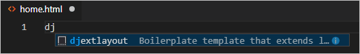</p></p> <p> 当您选择该补全时，代码片段的代码会出现，光标位于代码片段的插入点：</p> <p> <p>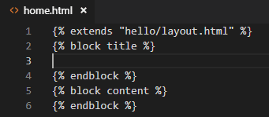</p></p> <ol> <li>在 "title" 块的插入点处，写入 <code>Home</code>，在 "content" 块中，写入 <code><p>Home page for the Visual Studio Code Django tutorial.</p></code>，然后保存文件。这些行是扩展页面模板的唯一独特部分： </li> <li>在 <code>templates/hello</code> 文件夹中，创建 <code>about.html</code>，使用代码片段插入样板标记，分别在 "title" 和 "content" 块中插入 <code>About us</code> 和 <code><p>About page for the Visual Studio Code Django tutorial.</p></code>，然后保存文件。 </li> <li>重复上一步，使用 <code>Contact us</code> 和 <code><p>Contact page for the Visual Studio Code Django tutorial.</p></code> 创建 <code>templates/hello/contact.html</code>。 </li> <li>在应用的 <code>urls.py</code> 中，为 /about 和 /contact 页面添加路由。请注意，<code>path</code> 函数的 <code>name</code> 参数定义了您在模板中的 <code>{% url %}</code> 标签中引用页面时使用的名称。 <pre><code class="language-python"> path("about/", views.about, name="about"), path("contact/", views.contact, name="contact"),</code></pre> </li> <li>在 <code>views.py</code> 中，为 /about 和 /contact 路由添加函数，这些函数引用它们各自的页面模板。同时修改 <code>home</code> 函数以使用 <code>home.html</code> 模板。 <pre><code class="language-python"> # Replace the existing home function with the one below def home(request): return render(request, "hello/home.html") def about(request): return render(request, "hello/about.html") def contact(request): return render(request, "hello/contact.html")</code></pre> <h3>运行应用</h3> </li> </ol> <p>所有页面模板就位后，保存 <code>views.py</code>，运行应用，并在浏览器中打开首页以查看结果。在各个页面之间导航，验证页面模板是否正确扩展了基础模板。</p> <p><p>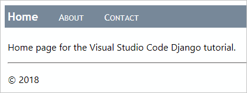</p></p> <h2>使用数据、数据模型和迁移</h2> <p>许多 Web 应用使用存储在数据库中的信息，而 Django 通过 <em>模型</em> 使得表示数据库中的对象变得容易。在 Django 中，模型是一个派生自 <code>django.db.models.Model</code> 的 Python 类，它表示一个特定的数据库对象，通常是一个表。您将这些类放在应用的 <code>models.py</code> 文件中。</p> <p>使用 Django，您几乎完全通过代码中定义的模型来操作数据库。然后，Django 的"迁移"会在您随时间演变模型时自动处理底层数据库的所有细节。一般工作流程如下：</p> <ol> <li>在您的 <code>models.py</code> 文件中更改模型。</li> <li>运行 <code>python manage.py makemigrations</code> 以在 <code>migrations</code> 文件夹中生成脚本，这些脚本将数据库从当前状态迁移到新状态。</li> <li>运行 <code>python manage.py migrate</code> 将脚本应用到实际的数据库。 </li> </ol> <p>迁移脚本有效地记录了您随时间对数据模型所做的所有增量更改。通过应用迁移，Django 更新数据库以匹配您的模型。由于每个增量更改都有自己的脚本，Django 可以自动将数据库的 <em>任何</em> 先前版本（包括新数据库）迁移到当前版本。因此，您只需要关注 <code>models.py</code> 中的模型，而无需关心底层数据库模式或迁移脚本。让 Django 来完成那部分工作！</p> <p>在代码中，您也完全使用您的模型类来存储和检索数据；Django 处理底层细节。唯一的例外是，您可以使用 Django 管理工具 <a href="https://docs.djangoproject.com/en/3.1/ref/django-admin/#loaddata">loaddata 命令</a>将数据写入数据库。此工具通常用于在 <code>migrate</code> 命令初始化模式之后初始化数据集。</p> <p>当使用 <code>db.sqlite3</code> 文件时，您也可以使用像 <a href="https://sqlitebrowser.org/">SQLite 浏览器</a> 这样的工具直接操作数据库。使用此类工具在表中添加或删除记录是可以的，但要避免更改数据库模式，因为这样会使数据库与应用的模型不同步。相反，应该更改模型，运行 <code>makemigrations</code>，然后运行 <code>migrate</code>。</p> <h3>数据库类型</h3> <p>默认情况下，Django 为应用的数据库包含一个 <code>db.sqlite3</code> 文件，适用于开发工作。如 <a href="https://www.sqlite.org/whentouse.html">SQLite 使用场景</a>（sqlite.org）中所述，SQLite 适用于每日点击量少于 10 万的中低流量站点，但不建议用于更高流量。它还限于单台计算机，因此不能用于任何多服务器场景，如负载均衡和地理复制。</p> <p>出于这些原因，请考虑使用生产级数据存储，如 <a href="https://www.postgresql.org/">PostgreSQL</a>、<a href="https://www.mysql.com/">MySQL</a> 和 <a href="https://www.microsoft.com/en-ca/sql-server/">SQL Server</a>。有关 Django 对其他数据库支持的信息，请参阅<a href="https://docs.djangoproject.com/en/3.1/intro/tutorial02/#database-setup">数据库设置</a>。您也可以使用 <a href="https://learn.microsoft.com/azure/developer/python/sdk/azure-sdk-overview">Azure SDK for Python</a> 来处理 Azure 存储服务，如表和 Blob。</p> <h3>定义模型</h3> <p>Django 模型仍然是一个派生自 <code>django.db.model.Models</code> 的 Python 类，您将其放在应用的 <code>models.py</code> 文件中。在数据库中，每个模型会自动获得一个名为 <code>id</code> 的唯一 ID 字段。所有其他字段都定义为类的属性，使用来自 <code>django.db.models</code> 的类型，例如 <code>CharField</code>（有限文本）、<code>TextField</code>（无限文本）、<code>EmailField</code>、<code>URLField</code>、<code>IntegerField</code>、<code>DecimalField</code>、<code>BooleanField</code>、<code>DateTimeField</code>、<code>ForeignKey</code> 和 <code>ManyToMany</code> 等。（有关详细信息，请参阅 Django 文档中的<a href="https://docs.djangoproject.com/en/3.1/ref/models/fields/">模型字段参考</a>。）</p> <p>每个字段接受一些属性，如 <code>max_length</code>。<code>blank=True</code> 属性表示该字段是可选的；<code>null=true</code> 表示值是可选的。还有一个 <code>choices</code> 属性，将值限制为数据值/显示值元组数组中的值。</p> <p>例如，在 <code>models.py</code> 中添加以下类，以定义一个表示简单消息日志中带日期条目的数据模型：</p> <pre><code class="language-python">from django.db import models from django.utils import timezone class LogMessage(models.Model): message = models.CharField(max_length=300) log_date = models.DateTimeField("date logged") def __str__(self): """Returns a string representation of a message.""" date = timezone.localtime(self.log_date) return f"'{self.message}' logged on {date.strftime('%A, %d %B, %Y at %X')}"</code></pre> <p>模型类可以包含返回从其他类属性计算出的值的方法。模型通常包含一个 <code>__str__</code> 方法，用于返回实例的字符串表示。</p> <h3>迁移数据库</h3> <p>由于您通过编辑 <code>models.py</code> 更改了数据模型，因此需要更新数据库本身。在 VS Code 中，打开一个已激活虚拟环境的终端（使用 <strong>Terminal: Create New Terminal</strong> 命令，<code>kb(workbench.action.terminal.new)</code>），导航到项目文件夹，然后运行以下命令：</p> <pre><code class="language-bash">python manage.py makemigrations python manage.py migrate</code></pre> <p>查看 <code>migrations</code> 文件夹，了解 <code>makemigrations</code> 生成的脚本。您也可以查看数据库本身，了解模式已更新。</p> <p>如果在运行命令时看到错误，请确保您没有使用之前步骤中遗留的调试终端，因为它们可能没有激活虚拟环境。</p> <h3>通过模型使用数据库</h3> <p>模型就位且数据库迁移完成后，您可以仅使用模型来存储和检索数据。在本节中，您将向应用添加一个表单页面，通过该页面可以记录消息。然后，您将修改首页以显示这些消息。由于您将在此处修改多个代码文件，请注意细节。</p> <ol> <li>在 <code>hello</code> 文件夹中（即 <code>views.py</code> 所在的文件夹），创建一个名为 <code>forms.py</code> 的新文件，代码内容如下，该代码定义了一个 Django 表单，其中包含一个从数据模型 <code>LogMessage</code> 中提取的字段： <pre><code class="language-python"> from django import forms from hello.models import LogMessage class LogMessageForm(forms.ModelForm): class Meta: model = LogMessage fields = ("message",) # NOTE: the trailing comma is required</code></pre> </li> <li>在 <code>templates/hello</code> 文件夹中，创建一个名为 <code>log_message.html</code> 的新模板，内容如下，该模板假设向模板提供了一个名为 <code>form</code> 的变量来定义表单的主体。然后，它添加了一个标签为 "Log" 的提交按钮。 <pre><code class="language-html"> {% extends "hello/layout.html" %} {% block title %} Log a message {% endblock %} {% block content %} <form method="POST" class="log-form"> {% csrf_token %} \{{ form.as_p }} <button type="submit" class="save btn btn-default">Log</button> </form> {% endblock %}</code></pre> <blockquote><strong>注意</strong>：Django 的 <code>{% csrf_token %}</code> 标签提供了跨站请求伪造保护。有关详细信息，请参阅 Django 文档中的<a href="https://docs.djangoproject.com/en/3.1/ref/csrf/">跨站请求伪造保护</a>。</blockquote> </li> <li>在应用的 <code>static/hello/site.css</code> 文件中，添加一条规则以使输入表单更宽： <pre><code class="language-css"> input[name=message] { width: 80%; }</code></pre> </li> <li>在应用的 <code>urls.py</code> 文件中，为新页面添加路由： <pre><code class="language-python"> path("log/", views.log_message, name="log"),</code></pre> </li> <li>在 <code>views.py</code> 中，定义名为 <code>log_message</code> 的视图（由 URL 路由引用）。此视图同时处理 HTTP GET 和 POST 情况。在 GET 情况（<code>else:</code> 部分）中，它只显示您在前面步骤中定义的表单。在 POST 情况中，它从表单中检索数据到一个数据对象（<code>message</code>），设置时间戳，然后保存该对象，此时它会被写入数据库： <pre><code class="language-python"> # Add these to existing imports at the top of the file: from django.shortcuts import redirect from hello.forms import LogMessageForm from hello.models import LogMessage # Add this code elsewhere in the file: def log_message(request): form = LogMessageForm(request.POST or None) if request.method == "POST": if form.is_valid(): message = form.save(commit=False) message.log_date = datetime.now() message.save() return redirect("home") else: return render(request, "hello/log_message.html", {"form": form})</code></pre> </li> <li>在尝试一切之前，还有一步！在 <code>templates/hello/layout.html</code> 中，在 "navbar" div 中为消息记录页面添加一个链接： <pre><code class="language-html"> <!-- Insert below the link to Home --> <a href="{% url 'log' %}" class="navbar-item">Log Message</a></code></pre> </li> <li>运行应用并在浏览器中打开首页。选择导航栏上的 <strong>Log Message</strong> 链接，它应该显示消息记录页面： </li> </ol> <p> <p>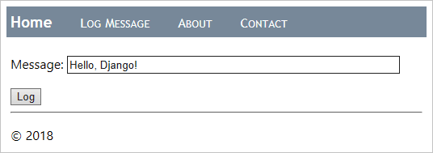</p></p> <ol> <li>输入一条消息，选择 <strong>Log</strong>，您应该被带回首页。首页目前还没有显示任何已记录的消息（您稍后将解决这个问题）。您也可以随意再记录几条消息。如果需要，可以使用像 SQLite 浏览器这样的工具查看数据库，以查看是否已创建记录。以只读方式打开数据库，或者记得在使用应用之前关闭数据库，否则应用会因数据库被锁定而失败。 </li> <li>完成后停止应用。 </li> <li>现在修改首页以显示已记录的消息。首先，将应用 <code>templates/hello/home.html</code> 文件的内容替换为以下标记。此模板期望一个名为 <code>message_list</code> 的上下文变量。如果它接收到该变量（通过 <code>{% if message_list %}</code> 标签检查），则迭代该列表（<code>{% for message in message_list %}</code> 标签）为每条消息生成表格行。否则，页面会指示尚未记录任何消息。 <pre><code class="language-html"> {% extends "hello/layout.html" %} {% block title %} Home {% endblock %} {% block content %} <h2>Logged messages</h2> {% if message_list %} <table class="message_list"> <thead> <tr> <th>Date</th> <th>Time</th> <th>Message</th> </tr> </thead> <tbody> {% for message in message_list %} <tr> <td>\{{ message.log_date | date:'d M Y' }}</td> <td>\{{ message.log_date | time:'H:i:s' }}</td> <td> \{{ message.message }} </td> </tr> {% endfor %} </tbody> </table> {% else %} <p>No messages have been logged. Use the <a href="{% url 'log' %}">Log Message form</a>.</p> {% endif %} {% endblock %}</code></pre> </li> <li>在 <code>static/hello/site.css</code> 中，添加一条规则来稍微格式化表格： <pre><code class="language-css"> .message_list th,td { text-align: left; padding-right: 15px; }</code></pre> </li> <li>在 <code>views.py</code> 中，导入 Django 的通用 <code>ListView</code> 类，我们将用它来实现首页： <pre><code class="language-python"> from django.views.generic import ListView</code></pre> </li> <li>同样在 <code>views.py</code> 中，将 <code>home</code> 函数替换为一个名为 <code>HomeListView</code> 的<em>类</em>，该类派生自 <code>ListView</code>，将自身绑定到 <code>LogMessage</code> 模型，并实现一个函数 <code>get_context_data</code> 来生成模板的上下文。 <pre><code class="language-python"> # Remove the old home function if you want; it's no longer used class HomeListView(ListView): """Renders the home page, with a list of all messages.""" model = LogMessage def get_context_data(self, **kwargs): context = super(HomeListView, self).get_context_data(**kwargs) return context</code></pre> </li> <li>在应用的 <code>urls.py</code> 中，导入数据模型： <pre><code class="language-python"> from hello.models import LogMessage</code></pre> </li> <li>同样在 <code>urls.py</code> 中，为新视图创建一个变量，该变量按降序检索最近五个 <code>LogMessage</code> 对象（这意味着它会查询数据库），然后为模板上下文中的数据提供一个名称（<code>message_list</code>），并标识要使用的模板： <pre><code class="language-python"> home_list_view = views.HomeListView.as_view( queryset=LogMessage.objects.order_by("-log_date")[:5], # :5 limits the results to the five most recent context_object_name="message_list", template_name="hello/home.html", )</code></pre> </li> <li>在 <code>urls.py</code> 中，修改首页的路径以使用 <code>home_list_view</code> 变量： <pre><code class="language-python"> # Replace the existing path for "" path("", home_list_view, name="home"),</code></pre> </li> <li>启动应用并在浏览器中打开首页，现在应该显示消息了： </li> </ol> <p> <p>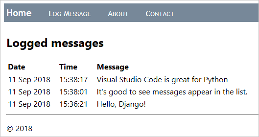</p></p> <ol> <li>完成后停止应用。 <h2>在页面模板中使用调试器</h2> </li> </ol> <p>如前一节所示，页面模板可以包含过程指令，如 <code>{% for message in message_list %}</code> 和 <code>{% if message_list %}</code>，而不仅仅是像 <code>{% url %}</code> 和 <code>{% block %}</code> 这样的被动声明式元素。因此，就像处理任何其他过程代码一样，您可能会在模板中出现编程错误。</p> <p>幸运的是，当您在调试配置中设置了 <code>"django": true</code> 时（您已经设置好了），VS Code 的 Python 扩展提供了模板调试功能。以下步骤演示了此功能：</p> <ol> <li>在 <code>templates/hello/home.html</code> 中，在 <code>{% if message_list %}</code> 和 <code>{% for message in message_list %}</code> 这两行上设置断点，如下图所示中的黄色箭头： </li> </ol> <p> <p>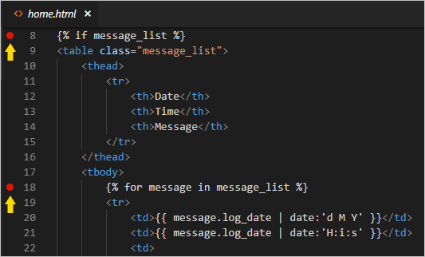</p></p> <ol> <li>在调试器中运行应用，并在浏览器中打开首页。（如果您已经在运行调试器，则无需在设置断点后重新启动应用；只需刷新页面即可。）观察 VS Code 在模板中的 <code>{% if %}</code> 语句处中断进入调试器，并在 <strong>变量</strong> 窗格中显示所有上下文变量： </li> </ol> <p> <p>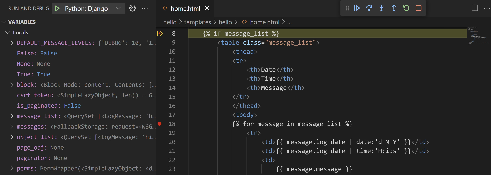</p></p> <ol> <li>使用单步跳过（<code>kb(workbench.action.debug.stepOver)</code>）命令逐步执行模板代码。观察调试器跳过所有声明式语句，并在任何过程代码处暂停。例如，逐步执行 <code>{% for message in message_list %}</code> 循环可以让您检查 <code>message</code> 中的每个值，并让您逐步执行像 <code><td>\{{ message.log_date | date:'d M Y' }}</td></code> 这样的行。 </li> <li>您还可以在 <strong>调试控制台</strong> 面板中使用变量。（但是，像 <code>date</code> 这样的 Django 过滤器目前在控制台中不可用。） </li> <li>准备好后，选择继续（<code>kb(workbench.action.debug.continue)</code>）以完成应用运行，并在浏览器中查看渲染的页面。完成后停止调试器。 <h2>可选活动</h2> </li> </ol> <p>以下各节描述了您在 Python 和 Visual Studio Code 工作中可能会发现有用的额外步骤。</p> <h3>为环境创建 requirements.txt 文件</h3> <p>当您通过源代码管理或其他方式共享应用代码时，复制虚拟环境中的所有文件是没有意义的，因为接收者自己总是可以重新创建该环境。</p> <p>因此，开发人员通常会从源代码管理中省略虚拟环境文件夹，而是使用 <code>requirements.txt</code> 文件来描述应用的依赖项。</p> <p>尽管您可以手动创建该文件，但您也可以使用 <code>pip freeze</code> 命令根据已激活环境中安装的确切库来生成该文件：</p> <ol> <li>在使用 <strong>Python: Select Interpreter</strong> 命令选择了您选择的环境后，运行 <strong>Terminal: Create New Terminal</strong> 命令（<code>kb(workbench.action.terminal.new)</code>）以打开一个激活了该环境的终端。 </li> <li>在终端中，运行 <code>pip freeze > requirements.txt</code> 在项目文件夹中创建 <code>requirements.txt</code> 文件。 </li> </ol> <p>任何接收到项目副本的人（或构建服务器）只需要运行 <code>pip install -r requirements.txt</code> 命令，即可在活动环境中重新安装应用所依赖的包。</p> <blockquote><strong>注意</strong>：<code>pip freeze</code> 会列出您在当前环境中安装的所有 Python 包，包括您当前未使用的包。该命令还会列出带有确切版本号的包，您可能希望将其转换为范围以便将来获得更大的灵活性。有关更多信息，请参阅 pip 命令文档中的<a href="https://pip.pypa.io/en/stable/user_guide/#requirements-files">需求文件</a>。</blockquote> <h3>创建超级用户并启用管理界面</h3> <p>默认情况下，Django 为 Web 应用提供了一个受身份验证保护的管理界面。该界面通过内置的 <code>django.contrib.admin</code> 应用实现，该项目 <code>INSTALLED_APPS</code> 列表（<code>settings.py</code>）中默认包含此项，身份验证由内置的 <code>django.contrib.auth</code> 应用处理，该应用也默认在 <code>INSTALLED_APPS</code> 中。</p> <p>执行以下步骤以启用管理界面：</p> <ol> <li>在 VS Code 中为您的虚拟环境打开一个终端，然后运行命令 <code>python manage.py createsuperuser --username=<用户名> --email=<邮箱></code>，当然，请将 <code><用户名></code> 和 <code><邮箱></code> 替换为您的个人信息来创建应用中的超级用户账户。当您运行该命令时，Django 会提示您输入并确认密码。 </li> </ol> <p> 请务必记住您的用户名和密码组合。这些是您用来对应用进行身份验证的凭据。</p> <ol> <li>在项目级别的 <code>urls.py</code>（本教程中为 <code>web_project/urls.py</code>）中添加以下 URL 路由，以指向内置的管理界面： <pre><code class="language-python"> # This path is included by default when creating the app path("admin/", admin.site.urls),</code></pre> </li> <li>运行服务器，然后在浏览器中打开应用的 /admin 页面（例如，在使用开发服务器时为 <code>http://127.0.0.1:8000/admin</code>）。 </li> <li>一个登录页面会出现，由 <code>django.contrib.auth</code> 提供。输入您的超级用户凭据。 </li> </ol> <p> <p>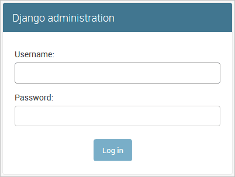</p></p> <ol> <li>身份验证后，您将看到默认的管理页面，通过它可以管理用户和组： </li> </ol> <p> <p>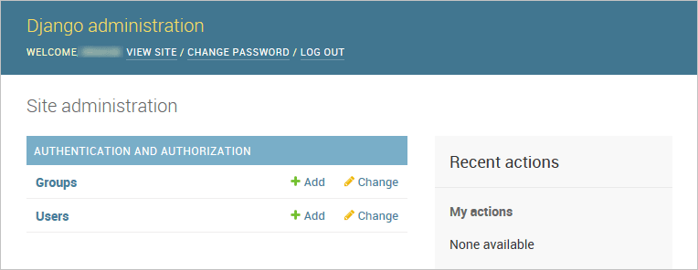</p></p> <p>您可以根据需要自定义管理界面。例如，您可以提供编辑和删除数据库中条目的功能。有关进行自定义的更多信息，请参阅 <a href="https://docs.djangoproject.com/en/3.1/ref/contrib/admin/">Django 管理站点文档</a>。</p> <h3>使用 Container Tools 扩展为 Django 应用创建容器</h3> <p><a href="https://marketplace.visualstudio.com/items?itemName=ms-azuretools.vscode-containers">Container Tools 扩展</a> 使得从 Visual Studio Code 构建、管理和部署容器化应用程序变得容易。如果您有兴趣了解如何为本教程中开发的 Django 应用创建 Python 容器，请查看 <a href="../docs/containers/quickstart-python.md">Python 在容器中</a>教程，它将引导您完成以下操作：</p> <ul> <li>创建一个描述简单 Python 容器的 <code>Dockerfile</code> 文件。</li> <li>构建、运行并验证 <a href="https://www.djangoproject.com/">Django</a> 应用的功能。</li> <li>调试在容器中运行的应用。 <h2>后续步骤</h2> </li> </ul> <p>祝贺您完成了在 Visual Studio Code 中使用 Django 的演练！</p> <p>本教程的完整代码项目可在 GitHub 上找到：<a href="https://github.com/microsoft/python-sample-vscode-django-tutorial">python-sample-vscode-django-tutorial</a>。</p> <p>在本教程中，我们只是触及了 Django 所能做的所有事情的皮毛。请务必访问 <a href="https://docs.djangoproject.com/en/3.1/">Django 文档</a>和<a href="https://docs.djangoproject.com/en/3.1/intro/tutorial01/">官方 Django 教程</a>，以获取有关视图、模板、数据模型、URL 路由、管理界面、使用其他类型的数据库、部署到生产环境等方面的更多详细信息。</p> <p>要在生产网站上试用您的应用，请查看教程<a href="https://learn.microsoft.com/azure/developer/python/tutorial-deploy-containers-01">使用 Docker 容器将 Python 应用部署到 Azure App Service</a>。Azure 还提供了一个标准容器 <a href="https://learn.microsoft.com/azure/developer/python/configure-python-web-app-local-environment">App Service on Linux</a>，您可以从 VS Code 内部将 Web 应用部署到其中。</p> <p>您可能还想查看 VS Code 文档中与 Python 相关的以下文章：</p> <ul> <li><a href="../docs/python/editing.md">编辑 Python 代码</a></li> <li><a href="../docs/python/linting.md">Linting</a></li> <li><a href="../docs/python/environments.md">管理 Python 环境</a></li> <li><a href="../docs/python/debugging.md">调试 Python</a></li> <li><a href="../docs/python/testing.md">测试</a></li> </ul> </div> </div> <script>function ts(id){var e=document.getElementById(id),t=e.previousElementSibling;e.classList.contains("collapsed")?(e.classList.remove("collapsed"),t.classList.remove("collapsed")):(e.classList.add("collapsed"),t.classList.add("collapsed"))}function toggleAll(v){document.querySelectorAll(".sidebar-section-content,.sidebar-sub-content").forEach(function(e){v?e.classList.remove("collapsed"):e.classList.add("collapsed")});document.querySelectorAll(".sidebar-section-title,.sidebar-sub-title").forEach(function(e){v?e.classList.remove("collapsed"):e.classList.add("collapsed")})}</script> </body> </html>